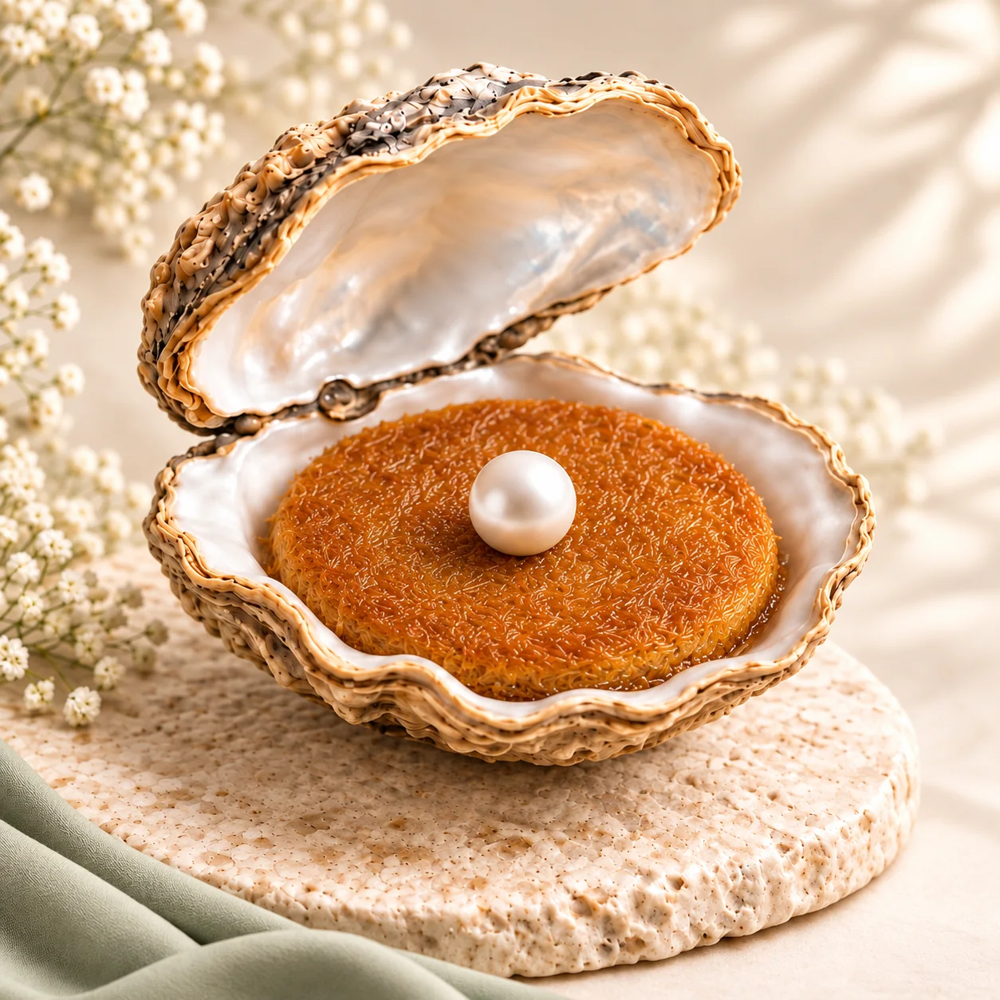
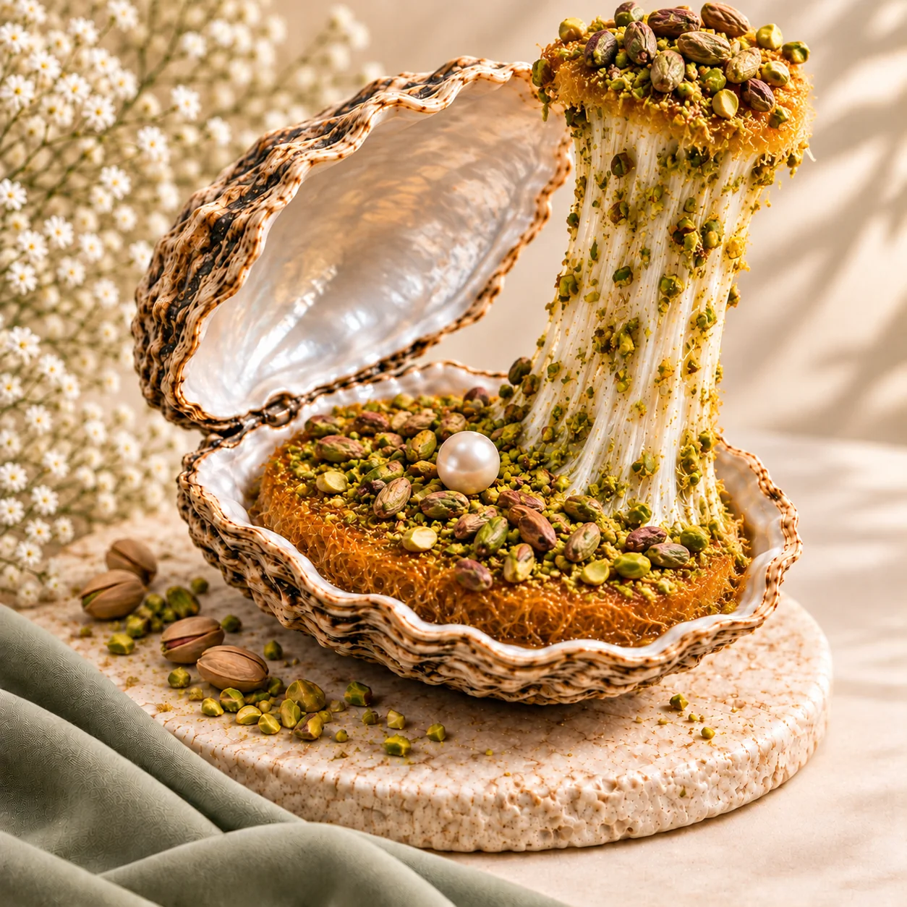
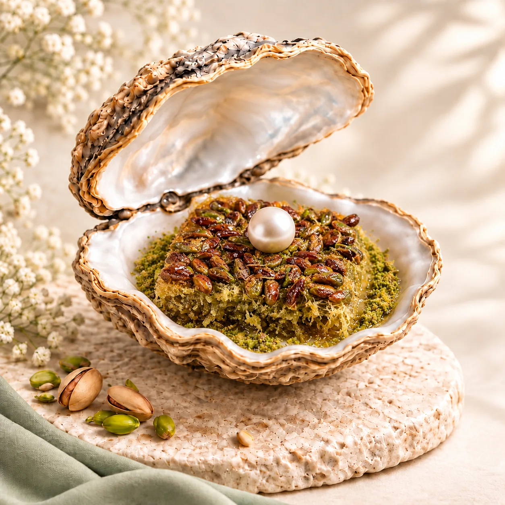
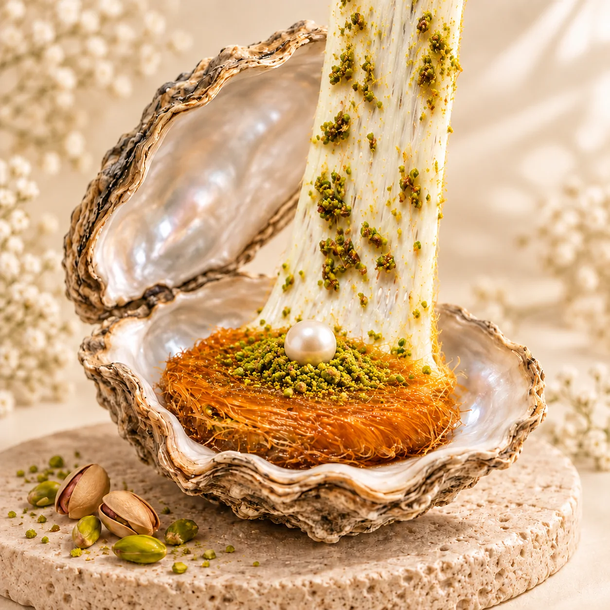
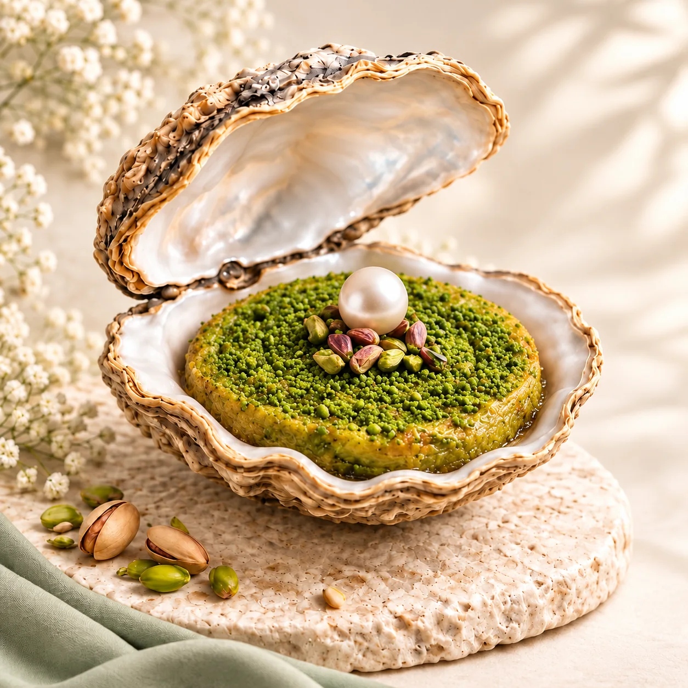
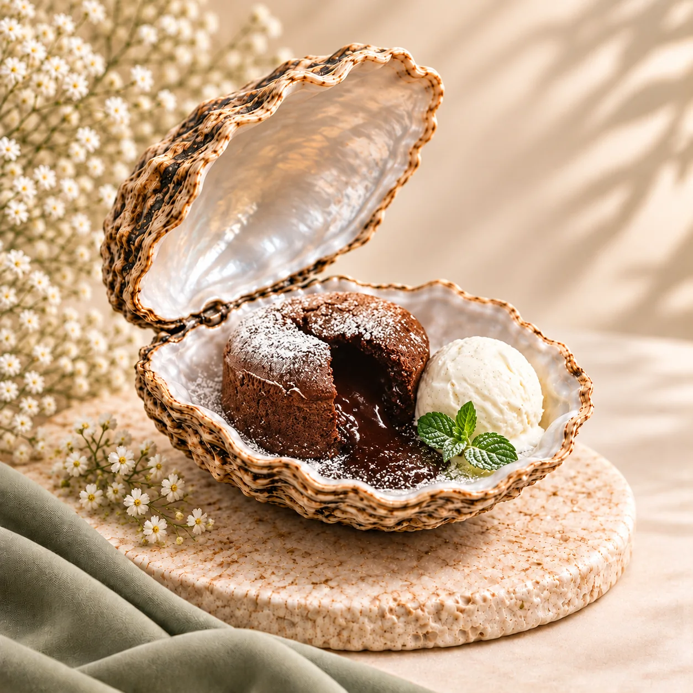
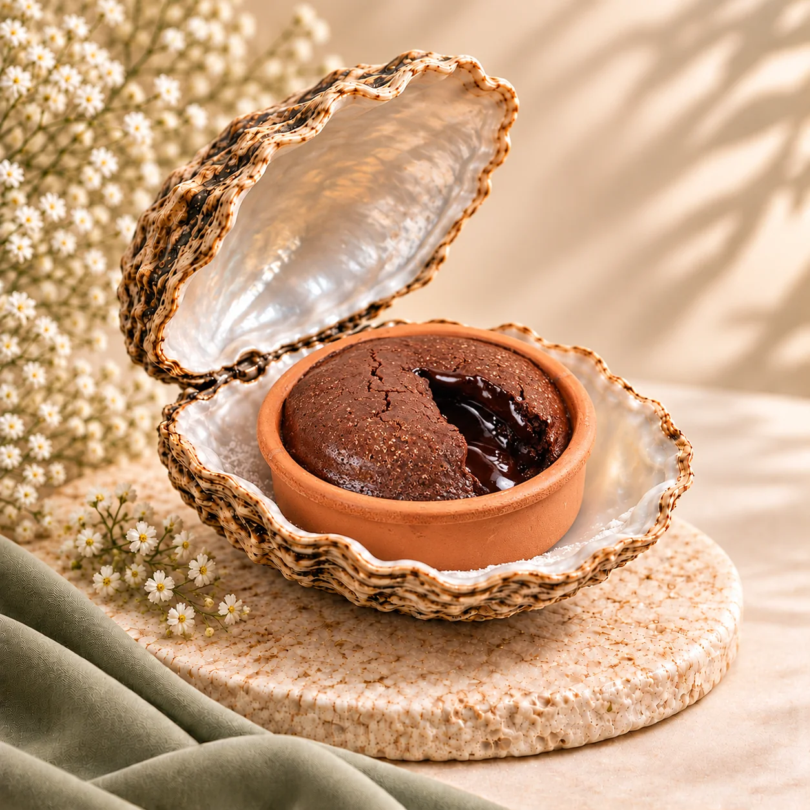
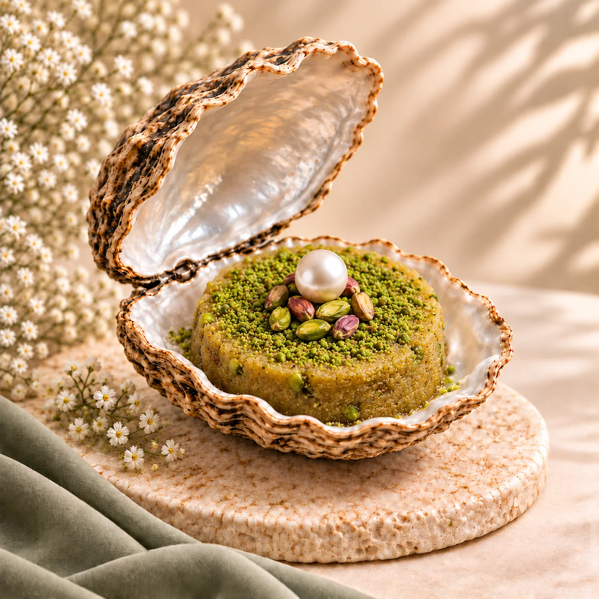

İncizade
lezzetleri.
Çıtır künefelerden sıcacık gözlemelere, her molaya yakışan bir lezzet.
Künefe & Kadayıf
Çıtır kadayıfın en sevilen halleri.

Klasik Künefe
Çıtır kadayıf, uzayan peynir; ilk lokmada tanıdık bir mutluluk.
Ürünü keşfet
Peynirli Fıstıklı Künefe
Peynirin yumuşaklığına fıstığın kendine özgü kokusu eşlik eder.
Ürünü keşfet
Fıstıklı Kadayıf
İncecik tellerin çıtırtısı, fıstığın dolgun lezzetiyle buluşur.
Ürünü keşfet
Fıstıklı Hasır Künefe
Hasır dokulu kadayıfın altında, fıstıkla zenginleşen bir lezzet.
Ürünü keşfetKatmerler
İncecik katlarda saklı bir gelenek.

Tatlı Lezzetler
Fıstıktan çikolataya, tatlı molalar.

Antep Dolama
Kıvrım kıvrım doku, fıstıkla tamamlanan geleneksel bir tat.
Ürünü keşfet
Folyo Sufle
Kaşığın ucunda sıcacık, yoğun bir çikolata keyfi.
Ürünü keşfet
Güveç Sufle
Güveçte sunulan sıcacık bir çikolata daveti.
Ürünü keşfet
Fıstıklı İrmik Helvası
İrmiğin tanıdık kavruk kokusu, fıstığın lezzetiyle tamamlanır.
Ürünü keşfetTuzlu Lezzetler
Sofralara sıcaklık katan tanıdık tatlar.